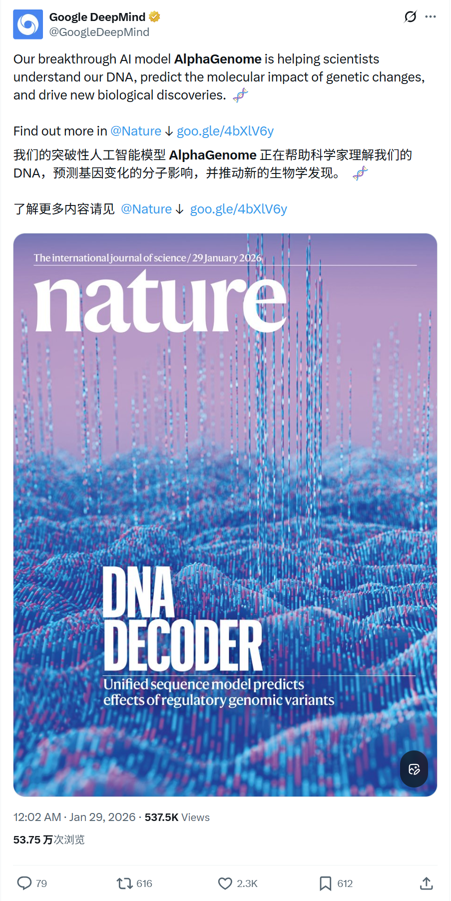
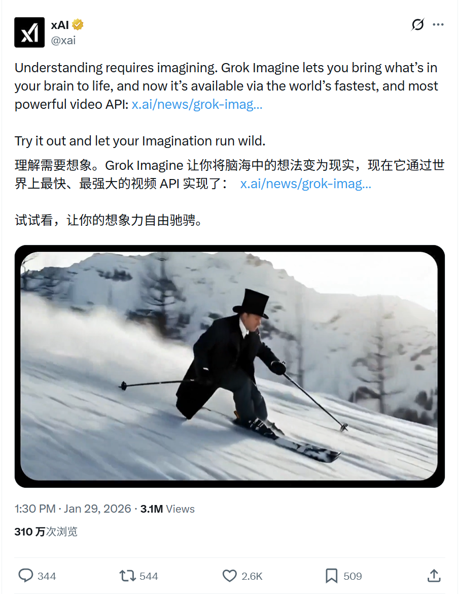
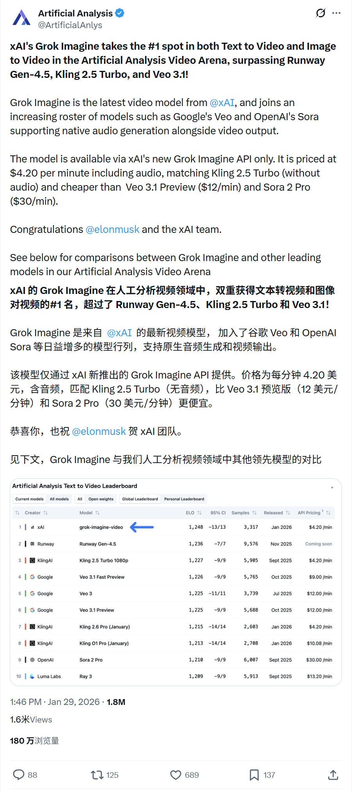
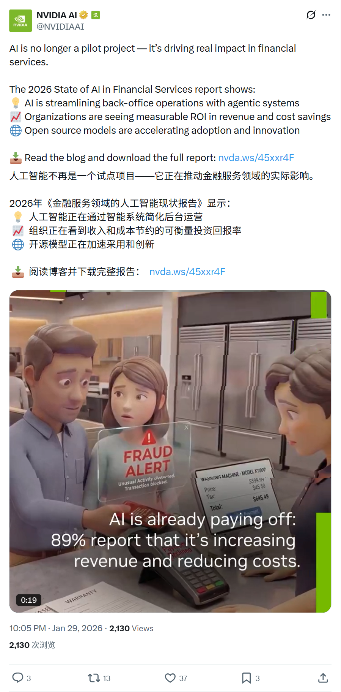

2026/01/29 硅谷AI圈动态
过去24小时，硅谷AI大佬在讨论什么
数据来源：X(twitter)平台实时推文
 小禾说AI (公众号)
清华小禾说AI (视频号)
小禾说AI (公众号)
清华小禾说AI (视频号)
📊 总览
过去24小时，硅谷AI圈活跃度一般。最活跃的是马斯克和xAI，围绕Grok Imagine API发布了10多条推文。而Google AlphaGenome模型正式发表于《Nature》杂志，助力人类DNA和生物学研究。
| 主题 | 关键事件 |
|---|---|
| Google DeepMind | 发布AlphaGenome基因组模型，登上《Nature》杂志封面 |
| xAI | Grok Imagine API上线，斩获视频生成模型双料冠军 |
| NVIDIA | 2026金融业调查：AI助力增收减本，从试点转向实战 |
1
Google DeepMind - AlphaGenome：解密DNA的AI新突破
🚀 核心内容
- Nature封面重磅发布： DeepMind发布了最新的基因组学模型AlphaGenome，相关论文发表在《Nature》杂志上。
- 卓越性能： AlphaGenome在26项变异效应预测评估中，有25项匹配或超过了目前最强的外部模型。
- 全基因组理解： 这是一个统一的DNA序列模型，能输入1Mb的长序列，以单碱基分辨率预测数千种功能基因组轨迹。
- 开源贡献： 模型权重已向学术研究人员开放，旨在帮助科学家理解DNA、预测基因变化的分子影响并推动生物学新发现。
📸 原帖截图

2
xAI - Grok Imagine API：视频生成新霸主
🚀 核心内容
- API正式上线： xAI推出了Grok Imagine API，这是一套统一的创意工作流API，提供最先进的视频生成和突破性的视频编辑功能。
- 评测登顶： 在Artificial Analysis的视频Arena中，Grok Imagine拿下“文本生成视频”和“图像生成视频”双料第一，超越了Runway Gen-4.5， Kling 2.5 Turbo和Google Veo 3.1。
- 高级编辑功能： 支持通过文本指令添加、移除或替换视频中的对象。
- 极致性价比： 定价极具竞争力，每分钟视频生成仅需$4.20（含音频），远低于Sora 2 Pro ($30/min) 和 Veo 3.1 ($12/min)。
📸 原帖截图


3
NVIDIA - 2026金融服务AI调查：AI不再只是试点
🚀 核心内容
- 实战转型： 调查显示，AI在金融服务业已不再是试点项目，正在推动实质性的业务影响。
- 显著收益： 89%的受访者表示AI帮助增加了年度收入并降低了成本；近100%的机构计划在未来一年增加或保持AI预算。
- Agentic AI崛起： 42%的金融机构正在使用或评估“代理式AI”(Agentic AI)，其中21%已经部署了相关应用。
- 开源与创新： 开源模型正成为加速采用和创新的关键部分，84%的机构将其视为战略重点。
📸 原帖截图
